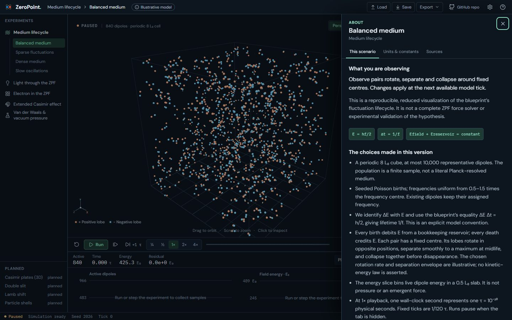
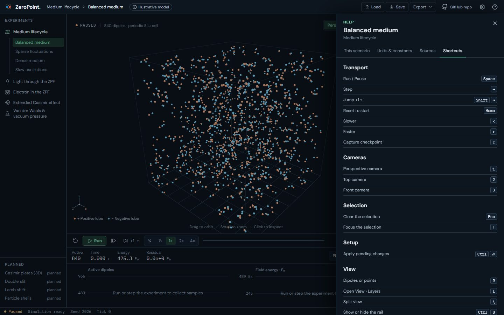
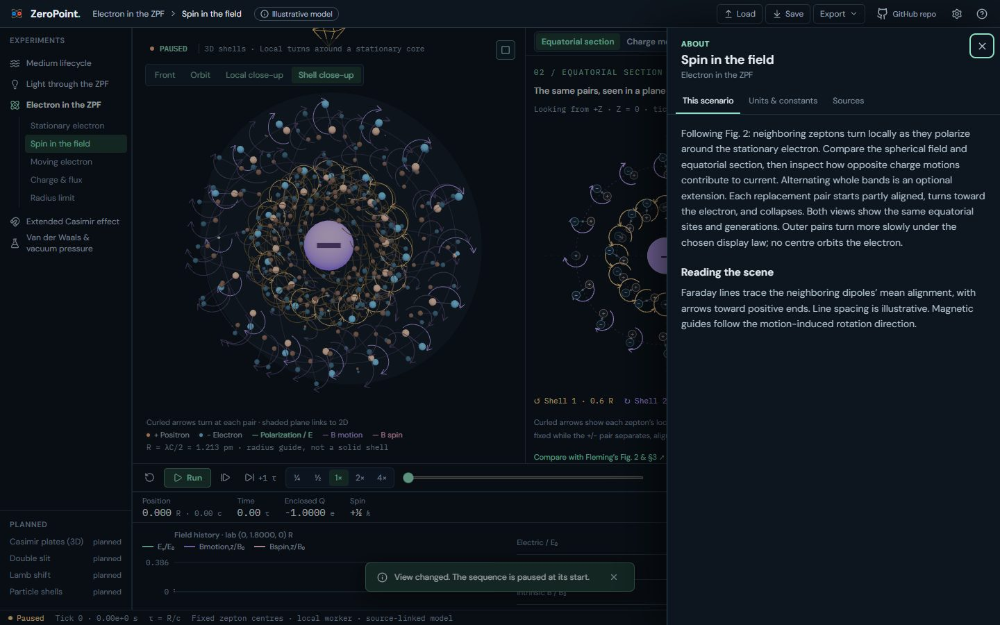
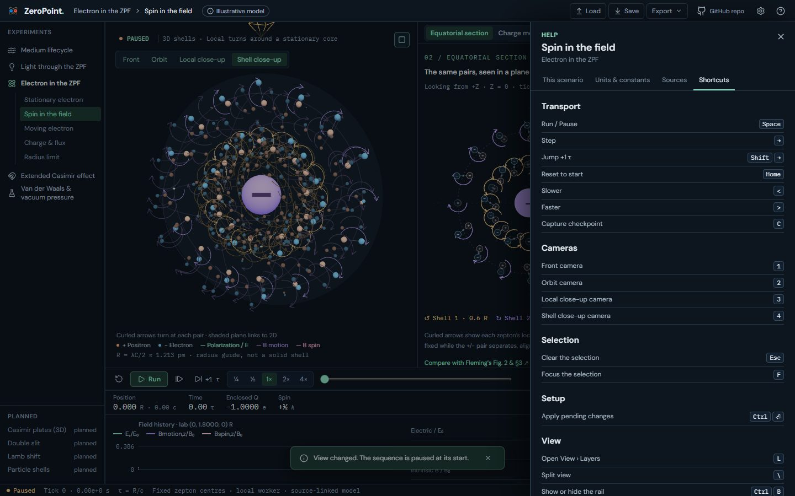

UI 15a · Shortcuts: before and after
Every keyboard shortcut is now an action in one registry (src/workbench/actions.ts) with a label, a group and its keys. One listener per visible lab runs them, and Help › Shortcuts lists the visible lab's map, grouped as the command palette (UI 15b) will be. ? and the header's ? button open the Help sheet: About and Shortcuts are one sheet, as you chose, so its eyebrow and the button now read Help. New keys from the plan's keyboard map: Shift → (+1 τ), ] and [ (next and previous event), Home (reset), < and > (speed), C (capture), 1–4 (camera presets), R (Medium's representation), L (View), Ctrl S and Ctrl O (save and load). Space and → work as before. Shortcuts never fire while typing, inside a dialog, or on a control's own keys (Space on a button, arrows in a segmented control).
Real screens: "before" runs the layer below, and "after" runs this layer. Click an image to open it at full size. Regenerate with node scripts/compare-screens.mjs --before ../14c-settings --out docs/ui-previews/15a-actions --set shortcuts --title 'UI 15a · Shortcuts' --description 'Every keyboard shortcut is now an action in one registry (src/workbench/actions.ts) with a label, a group and its keys. One listener per visible lab runs them, and Help › Shortcuts lists the visible lab'''s map, grouped as the command palette (UI 15b) will be. ? and the header'''s ? button open the Help sheet: About and Shortcuts are one sheet, as you chose, so its eyebrow and the button now read Help. New keys from the plan'''s keyboard map: Shift → (+1 τ), ] and [ (next and previous event), Home (reset), < and > (speed), C (capture), 1–4 (camera presets), R (Medium'''s representation), L (View), Ctrl S and Ctrl O (save and load). Space and → work as before. Shortcuts never fire while typing, inside a dialog, or on a control'''s own keys (Space on a button, arrows in a segmented control).'.
Medium · Help › Shortcuts




Electron · Spin: Help › Shortcuts



